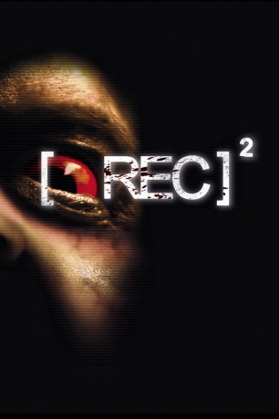

#2564 REC 2
 gesehen am 26.11.2015
gesehen am 26.11.2015
 
 IMDB-Wertung: 6.5 / 10
IMDB-Wertung: 6.5 / 10  Metascore: 52
Metascore: 52 
Ein schwerbewaffnetes Einsatzkommando dringt unter der Führung des unheimlichen Dr. Owen in das unter Quarantäne stehende Wohnhaus ein. Auftrag der Mission ist es, eine Blutprobe des ominösen Mädchens Niña Medeiros zu nehmen, um so schnell wie möglich ein Gegenmittel gegen den Zombie-Virus herzustellen. Die ersten Infizierten lassen auch nicht lange auf sich warten und der mysteriöse Doktor scheint seine eigenen Ziele zu verfolgen. Schon bald wimmelt es überall von blutdürstigen Zombies und das tödliche Grauen bricht erneut los!
Jahr: 2009
Dauer: 85 Minuten
FSK: 16
Land: Spanien Studio: 3L FilmverleihTonspuren:
Untertitel: Deutsch,
Auflösung: 1080p (1920x1040) Größe: 7731 MB
Genre: Horror
Regisseur: Jaume Balagueró, Paco Plaza
Drehbuch: Jaume Balagueró, Manu Díez, Paco Plaza, Amèlia Mora
Soundtrack:
Darsteller:
- Jonathan D. Mellor als Dr. Owen
- Alejandro Casaseca als Martos
- Pau Poch als Tito
- Claudia Silva als Jennifer
 Carlos Olalla als Comisario
Carlos Olalla als Comisario- Òscar Foronda als Francotirador
- Manuela Velasco als Ángela Vidal
- Elisa Sirvent als Reconocimiento de voz
- Pep Sais als Magnetófono
- Paco Plaza als Zombie
 Javier Botet als Tristana Medeiros , uncredited
Javier Botet als Tristana Medeiros , uncredited- Óscar Zafra als Jefe
- Ariel Casas als Larra
- Pablo Rosso als Rosso
- Rafa Parra als Rosso
- Pep Molina als Padre Jennifer
 Andrea Ros als Mire
Andrea Ros als Mire- Àlex Batllori als Ori
- Juli Fàbregas als Bombero
- Ferran Terraza als Manu
- Martha Carbonell als Sra. Izquierdo
- Jorge-Yamam Serrano als Policía Joven
- Ana Isabel Velásquez als Chica colombiana
 Carlos Lasarte als César
Carlos Lasarte als César- Chen Min Kao als Japanese Neighbor
- Akemi Goto als Japanese Neighbor
- David Vert als Álex
- Anna García als Mari Carmen
- Héctor Vidales als Niño
- Lazzaro E. Oertli Ortiz als Niño
- Alex Lameiro Blanch als Niño
- Joan Hostench Martínez als Niños
- Oriol Maymó als Conductor furgón
- Jesús Pérez Villar als Megafonías Policía
- Marga Villalonga als Zombie
- Ana Domínguez Ortiz als Zombie
- Laura Díez Mora als Zombie
- Sandra García als Zombie
- Gerard Espert als Zombie
- Jaume Balagueró als Zombie
- Albert Grabuleda Capdevila als Francotirador , uncredited
- Pere Vall als Periodista , uncredited
Datei: X:\FSK18-Collections\REC\REC 2 (2009, FSK16, 1920x1040).mkv seit 23.11.2015
Festplatte: FSK18
 Es gibt insgesamt 7 Filme in der Gruppe 'FSK18-Collections\REC'
Es gibt insgesamt 7 Filme in der Gruppe 'FSK18-Collections\REC'